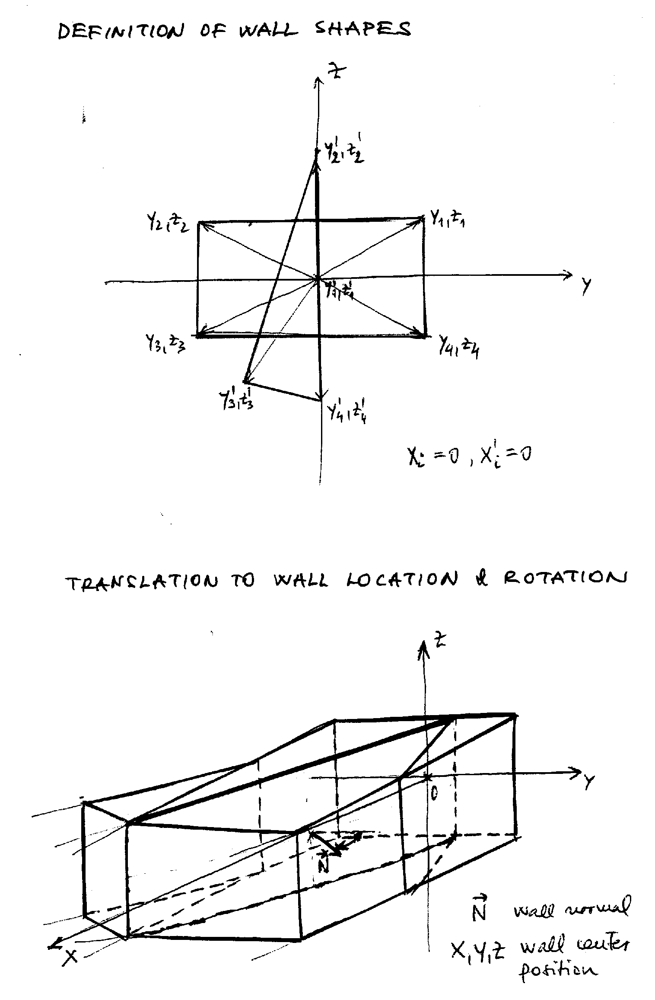
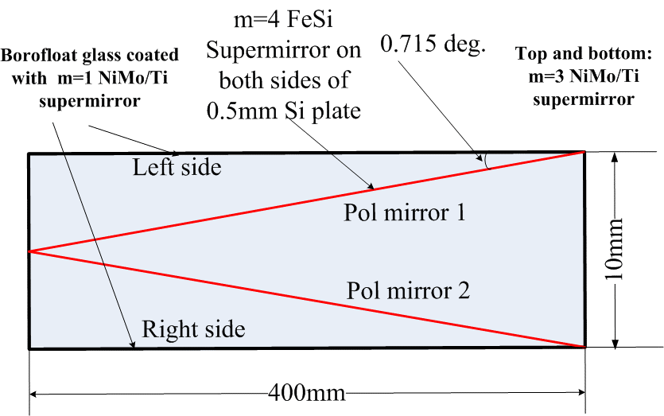
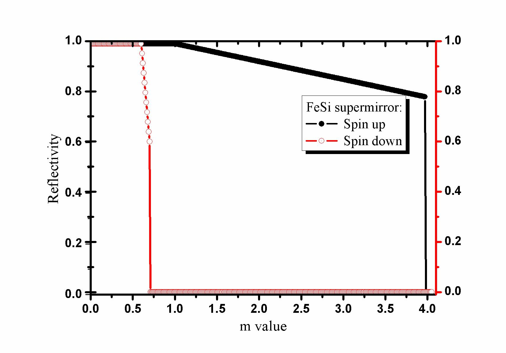
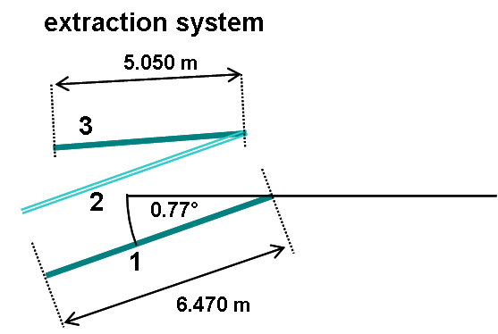

There are 3 VITESS modules to simulate mirrors: pol_mirror to simulate a plane (polarising) mirror, elliptic to simulate a (polarising) mirror of ellipsoidal shape, and sm_ensemble to simulate an arrangement of several plane (polarising) mirrors of variable reflection and transmission properties.
The module pol_mirror simulates one plane mirror that might have different reflectivity curves for spin-up and spin-down neutrons.
The transmitted or the reflected beam can be regarded. The co-ordinate system of the following module has to be set accordingly.
Size, position and orientation of the mirror as well as the reflectivity curves for spin-up and spin-down neutrons have to be given.
In addition, the spin quantization direction has to be defined.
The orientation of the mirror can only be set in 2 different ways:
a) rotation about the y-axis starting from a horizontal orientation (in x-y-plane)
b) rotation about the z-axis starting from a vertical orientation (in x-z-plane)
Absorption is not considered. If absorption inside a mirror has to be taken into account or an orientation is needed that is not accessible
in the way described, the more advanced module sm_ensemble has to be used.
The reflected fraction of the neutrons is calculated according to the formula
prefl = (aup*cos(&theta/2)2 + (adown*sin(&theta/2)2
&theta is the the polar angle relative to the quantization direction.
aup = sqrt(Rup) is the square root of the reflectivity of spin-up neutrons and
adown = sqrt(Rdown) the square root of the the reflectivity of the spin-down neutrons.
The orientation of the transmitted or reflected beam is given by
&thetaout,trans = 2 atan ( (1-adown) / (1-aup) * tan(&theta/2) )
&thetaout,refl = 2 atan ( adown / aup * tan(&theta/2) )
| Parameter Unit |
Description |
Range or Values |
Command Option |
| up-/down-reflectivity file | input data file containing the reflectivity curve R(Q) for spin-up and for spin-down neutrons resp. (in the same form as it is used for guide module) | - | -U -D |
| mode | criterion: use of transmitted or reflected beam. | transmission reflection |
-T |
| length [cm] |
length of the polarizing mirror (i.e. along beam axis) | >0 | -L |
| position X, Y, Z, [cm] |
x-, y- and z-position of the center of the polarizing mirror (in the input frame) | any | -X -Y -Z |
| inclination [deg] |
rotation angle of the polarizing mirror relative to the beam axis (see text) | [-180°,180] | -V |
| orientation | choice between vertical and horizontal orientation of the mirror (see text) | 'horizontal', 'vertical' | -O |
| analysis dir. X, Y, Z | x-, y- and z-component of the quantization direction | any | -a -b -c |
| output X, Y, Z, [cm] |
x-, y- and z-position of the output frame (in the input frame) | any | -x -y -z |
| horiz. vert. rotation angle [deg] |
rotation angle of the output frame relative to the input frame in horizontal and vertical direction | [-180°,180] | -h -v |
The module mirror_elliptical simulates the neutron flight path through a ellipsoidal mirror calculating the intensity loss for each reflection (in dependence of the neutron wavelength and the incident angle).
One needs to give three semi axes to describe the ellipsoid (please see the well known mathematical ellipsoid equation).
One also has to give the center position of the ellipsoid. The ellipsoid can be rotated about one of the coordinate axis.
Please choose X, Y and Z limits for the elliptical mirror. In this case, the ellipsoid will be cut by 6 planes X=Xmin, X=Xmax, Y=Ymin, Y=Ymax, Z=Zmin, Z=Zmax.
So it is possible to create one or two mirrors or even an elliptical guide.
The position of the origin for the next module has to be given as well.
Spin-up and spin-down neutrons can have different reflectivity curves. In this way, also polarisation can be treated.
Additionally, the attenuation of the neutron beam in air of a certain humidity can be taken into account.
Surface waviness is also considered.
A visualization of the trajectories is possible (see figure).
| Parameter Unit |
Description |
Range or Values |
Command Option |
| semi axis X, Y, Z [cm] |
semi axes of the elliptic mirror in x-direction (beam), y-direction (left) and z-direction (up) | >0 | -a -b -c |
| Center position main X, Y, Z [cm] |
x-, y- and z-component of the center of the ellipsoid | any | -d -e -k |
| Rotation angle [deg] |
angle of rotation of the ellipsoid | [-90°,90°] | -g |
| Rotate around the axisfield range file | axis about which the ellipsoid is rotated | 'OX' 'OY' 'OZ' |
-g |
| X_MIN, X_MAX [cm] |
range (over which the mirror exists) in beam direction (x-axis) | -Axis_x<XMIN<XMAX<Axis_x | -A -C |
| Y_MIN, Y_MAX [cm] |
range (over which the mirror exists) in horizontal direction perpendiculat to the beam (y-axis) | -Axis_y<YMIN<YMAX<Axis_y | -D -E |
| Z_MIN, Z_MAX [cm] |
range (over which the mirror exists) in vertical direction (z-axis) | -Axis_z<ZMIN<ZMAX<Axis_z | -H -K |
| output X, Y, Z [cm] |
x-, y- and z-component of the origin of the output frame (in the input frame) | any | -s -t -w |
| Activate visualisation | activation of visualisation of the neutron trajectories (see figure) | 'yes' 'no' |
-y |
| Type of visualisation | plane to which the trajectories are projected for visualisation | 'XZ' 'XY' 'YZ' |
-Y |
| Full visualisation |
yes: visualisation of all neutrons paths no: only reflected neutrons are shown |
'yes' 'no' |
-v |
| Output device | for Unix only: choice of output format | 'x-windows' 'ps file' |
-l |
| Spin_up-/down reflectivity file | input data file containing the reflectivity curve R(Q) for spin-up and for spin-down neutrons resp. (in the same form as it is used in the guide module) | - | -i -I |
| surface waviness [deg] |
amplitude of waviness of a rectangular distribution this value is the maximal angle of deviation of the surface normal from the ideal normal. |
>=0 | -q |
| Reflected neutrons |
yes: only reflected neutrons are treated further on no : all neutrons are treated further on |
'yes' 'no' |
-u |
| Ideal reflection |
yes: ideal reflection (R=1) no: reflectivity from files |
'yes' 'no' |
-R |
| polarisation |
yes: split into spin-down and spin-up reflectivity no: spin-up reflectivity for all neutrons |
'yes' 'no' |
-p |
| neutron spin axis | axis for spin quantization | 'OX' 'OY' 'OZ' |
-V |
| air humidity [%] |
for 'air attenuation'='yes': relative air humidiy (at 293 K), used to calculate beam attenuation in air | [0,100] | -r |
| air attenuation |
no: no attenuation of the neutron beam in air yes: activation of attenuation of the neutron beam in air for T=293 K and the given humidity |
'no' 'yes' |
-z |
This module simulates an ensemble of mirror or supermirror (SM) planes of up to 50
elements. This can be used for the simulation of more complicated optical systems,
with branch geometry. For example one can use 4 elements as a normal guide
and put one transparent element into this tilted by an angle relative to
the main (beam) axis and use it as polarizer. Both sides of the supermirror plates reflect.
Shapes and positions of the SM elements have to be given in the file "geometry and reflectivity data".
Size and shape of each element are defíned by giving the four corners in a plane perpendicular to the beam.
The center of each mirror is then moved to his final position; then two rotations are executed to get the mirror in the right orientation.
A triangular shape can also be treated: 3 'corners' have to be co-linear for that.
The algorithm calculates the angle of inclination for each trajectory and decides about reflection or transmission depending on the reflectivity.
The reflectivity model that is used for the sm_ensemlbe module depends on the format of the parameter file. If the file format is the old one, then
for angles below theta_c, a reflectivity of 1 is assumed, for angles above thetaCSM, reflectivity of 0 is used. These parameters are used in the old
file format. For angles between theta_c and thetaCSM, the reflectivity decreases linearly from 1 to R.
If the new file format is used, then only the m number is given for spin-up and spin-down neutrons, respectively. The module then calculated the reflectivity
according to the empirical model describing the reflectivity behaviour of Swiss Neutronics mirrors. See below for details about the two file formats.
Visualisation of neutron paths or collision points is available. The module will visualize only the first 10000 trajectories or points.
| Parameter Unit> |
Description | Command Option |
| geometry and reflectivity data file | In this file shape, position, orientation, angular spread, 'up' and 'down' reflectivity curves and absorption of the mirrors have to be given | -P |
| File format | For differences between the old and the new file formats, see below. Its best to stick to the new format if a specific subtrate material is chosen. | -F |
| Subtrate coating | Choose between available materials Silicon or Sapphire for a proper description of neutron absorption. Choose Other for a general approximation. Beware that OTHER only works with the old file format! | -S |
| Modify color | Choose this option if the module should increase the color variable by 1 each time the trajectory undergoes a reflection within the mirror stack. | -R |
| spin quantisation direction | direction of spin quantisation in accordance with input data (e.g.source module) | -Q |
| output frame X',Y',Z' [cm] |
The position of the output frame origin in the original frame. It represents the translation vector applied to shift the origin of the original (input) frame to the new (output) position. | -r, -s, -t |
| output angle horizontal, vertical [deg] |
A rotation about the Z axis and then a rotation about the (new)Y axis defines a new orientation for the neutrons written to the output. | -h, -v |
| Visualisation window | Horizontal and vertical coordinates of the custom visualisation window. | -w, -W, -a, -A |
| Cutoff probability | The minimum probability still used for the custom visualisation | -b |
| stop at collisions | At this number of collisions it stops and writes out the trajectory for custom visualisation. This can be used for localising the coordinates of the 1th, 2nd, 3rd, etc. collisions. | -M |
| visualisation |
If 'yes' (1), it writes out the collisions into a file "collisions.dat". Else: it visualises the trajectories |
-T |
| device | Choose the device for visualisation: 1 - display, 2 - file, 3 - display+file | -o |

Figure 1: geometry definitions
| Parameter Unit> |
Description | Values |
| on/off |
defines if the wall is active (1) or not (0) (i.e. you can switch it off) at most 50 walls can be active |
1: on 0: off |
| yi, zi i=1,..,4 [cm] |
defines shape and size of a mirror element: the positions of the corners of a quadrangle are given in a plane perpendicular to the beam you can also form a triangle if 3 'corners' are co-linear(cf. figure above) |
any |
| X Y Z [cm] |
X,Y,Z defines the position of the mirror: The element (defined by y1 to z4) is supposed to arranged around the origin (0,0,0). This point of the mirror is now translated to its rigth place in the final geometry by a shift by the vector (X,Y,Z). | 1: on 0: off |
| H/° V/° [deg] |
Rotation angles which define the final normal vector of the mirror. It is first rotated (in a horizontal plane) about the z-axis by an angle 'H'. Then it is rotated (in a vertikal plane) about the new y-axis by an angle 'V'. | -180° to 180° |
| h/° v/° [deg] |
is the full width of a rectangular distribution expected for the variations in the plane orientation. For each trajectory a deviation from the average orientation in the given range is determined by a Monte Carlo choice. | theoretically -180° to 180° |
| thetaC [rad] |
angle up to which 1 Å neutrons are totally reflected, corresponding to m=1 | typically: 0.00173 |
| theta_csm [rad] |
angle up to which 1 Å neutrons are reflected, corresponding to the m-value | m*0.00173 |
| R_csm |
reflectivity for theta_csm: theta_c < theta < theta_csm R decreases linearly from 1 to R_csm theta < theta_c : R = 1.0 theta > theta_csm: R = 0.0 |
0 ... 1 |
| µ*d |
wavelength dependent part of the attenuation (in case óf transmission) d is the thickness of the mirror in cm µ is the macroscopic attenuation (in 1/cm) for 1 Å neutrons |
> 0.0 0.017 for Si |
| µ_incoh*d |
wavelength independent part of the attenuation (in case óf transmission) d is the thickness of the mirror in cm µ_incoh is the macroscopic attenuation (in 1/cm) |
> 0.0 0.020 for Si |
| wall | name given by the user to the walls (no real input) | any text |
| Parameter Unit> |
Description | Values |
| on/off/no transmission |
defines if the wall is not active (0), active (1), or active without transmission, i.e. all trajectories that are not reflected are absorbed (2) at most 50 walls can be active |
0: off 1: on 2: no transmission |
| yi, zi i=1,..,4 [cm] |
defines shape and size of a mirror element: the positions of the corners of a quadrangle are given in a plane perpendicular to the beam you can also form a triangle if 3 'corners' are co-linear(cf. figure above) |
any |
| X Y Z [cm] |
X,Y,Z defines the position of the mirror: The element (defined by y1 to z4) is supposed to arranged around the origin (0,0,0). This point of the mirror is now translated to its rigth place in the final geometry by a shift by the vector (X,Y,Z). | 1: on 0: off |
| H/° V/° [deg] |
Rotation angles which define the final normal vector of the mirror. It is first rotated (in a horizontal plane) about the z-axis by an angle 'H'. Then it is rotated (in a vertikal plane) about the new y-axis by an angle 'V'. | -180° to 180° |
| h/° v/° [deg] |
is the full width of a rectangular distribution expected for the variations in the plane orientation. For each trajectory a deviation from the average orientation in the given range is determined by a Monte Carlo choice. | theoretically -180° to 180° |
| Thickness [cm] |
Thickness d of the mirror element | typically: 0.01 - 0.5cm |
| m spin-up | m value for the spin-up neutrons. Critical angle is then 0.1*m*λ. | typically: 0 - 7 |
| m spin-down | m value for the spin-down neutrons. Critical angle is then 0.1*m*λ. | typically: 0 - 7 |
A V type cavity is a transmission polarization device, by which a wide neutron band with large divergence can be polarized. Here it is realized as a single V cavity using an FeSi supermirror, which shows total reflectivity up to m=1 and zero reflectivity above m=4 for spin-up and total reflectivity up to m=0.6 and zero reflectivity above m=0.7 for spin-down neutrons (cf. figure and table).


Figure 2: V cavity and reflectivity curves of the FeSi coating of its polarizing mirrors1 20.0 1.5 -20.0 1.5 -20.0 -1.5 20.0 -1.5 20.0 -0.2496 0.0 -90.715 0.0 0.0 0.0 0.00173 0.00692 0.78 0.000144 0.0009 0.001038 0.001211 0.60 0.000144 0.0009 ----- pol mirror 1 ----- 1 20.0 1.5 -20.0 1.5 -20.0 -1.5 20.0 -1.5 20.0 0.2496 0.0 90.715 0.0 0.0 0.0 0.00173 0.00692 0.78 0.000144 0.0009 0.001038 0.001211 0.60 0.000144 0.0009 ----- pol mirror 2 ----- 1 20.0 1.5 -20.0 1.5 -20.0 -1.5 20.0 -1.5 20.0 -0.4992 0.0 90.000 0.0 0.0 0.0 0.00173 0.00173 0.99 100.00 100.00 0.00173 0.00173 0.99 100.00 100.00 ----- left side ----- 1 20.0 1.5 -20.0 1.5 -20.0 -1.5 20.0 -1.5 20.0 0.4992 0.0 90.000 0.0 0.0 0.0 0.00173 0.00173 0.99 100.00 100.00 0.00173 0.00173 0.99 100.00 100.00 ----- right side ----- 1 20.0 0.9984 -20.0 0.9984 -20.0 -0.9984 20.0 -0.9984 20.0 0.0000 1.5 90.000 -90.0 0.0 0.0 0.00173 0.00519 0.88 100.00 100.00 0.00173 0.00519 0.88 100.00 100.00 ----- up ----- 1 20.0 0.9984 -20.0 0.9984 -20.0 -0.9984 20.0 -0.9984 20.0 0.0000 -1.5 90.000 90.0 0.0 0.0 0.00173 0.00519 0.88 100.00 100.00 0.00173 0.00519 0.88 100.00 100.00 ----- down ----- on/off y1 z1 y2 z2 y3 z3 y4 z4 X Y Z H/° V/° h/° v/° Up: theta_c theta_csm R_csm µ*d µ_incoh*d Down: theta_c theta_csm R_csm µ*d µ_incoh*d wall
1 20.0 1.5 -20.0 1.5 -20.0 -1.5 20.0 -1.5 20.0 -0.2496 0.0 -90.715 0.0 0.0 0.0 0.03 4 0.6 ----- pol mirror 1 ----- 1 20.0 1.5 -20.0 1.5 -20.0 -1.5 20.0 -1.5 20.0 0.2496 0.0 90.715 0.0 0.0 0.0 0.03 4 0.6 ----- pol mirror 2 ----- 2 20.0 1.5 -20.0 1.5 -20.0 -1.5 20.0 -1.5 20.0 -0.4992 0.0 90.000 0.0 0.0 0.0 0.03 1 1 ----- left side ----- 2 20.0 1.5 -20.0 1.5 -20.0 -1.5 20.0 -1.5 20.0 0.4992 0.0 90.000 0.0 0.0 0.0 0.03 1 1 ----- right side ----- 2 20.0 0.9984 -20.0 0.9984 -20.0 -0.9984 20.0 -0.9984 20.0 0.0000 1.5 90.000 -90.0 0.0 0.0 0.03 3 3 ----- up ----- 2 20.0 0.9984 -20.0 0.9984 -20.0 -0.9984 20.0 -0.9984 20.0 0.0000 -1.5 90.000 90.0 0.0 0.0 0.03 3 3 ----- down ----- on/off y1 z1 y2 z2 y3 z3 y4 z4 X Y Z H/° V/° h/° v/° d m up m down wall
The following example shows the realization of a bi-spectral extraction system consisting of 3 vertical m=3 supermirrors and 2 horizontal m=2 supermirrors.
The vertical mirrors are 0.77° and 0.19° inclined (relative to the beamline) in the direction shown in the figure.
5 numbers have to be given to define the reflectivity curve (s. Table below), both for up- and down-neutrons. Note that apart from
the second mirror, all others do not transmit neutrons.

Figure 3: Bispectral extraction system1 323.5 5.0 -323.5 5.0 -323.5 -5.0 323.5 -5.0 323.5 -7.347 0.00 90.77 0.00 0.00 0.00 0.00173 0.00519 0.88 200.0 200.0 0.00173 0.00519 0.88 200.0 200.0 --left--- 1 323.5 5.0 -323.5 5.0 -323.5 -5.0 323.5 -5.0 323.5 -1.347 0.00 90.77 0.00 0.00 0.00 0.00173 0.00519 0.88 0.00024 0.00150 0.00173 0.00519 0.88 0.00024 0.00150 --center--- 1 252.5 5.0 -252.5 5.0 -252.5 -5.0 252.5 -5.0 394.5 2.163 0.00 90.19 0.00 0.00 0.00 0.00173 0.00519 0.88 200.0 200.0 0.00173 0.00519 0.88 200.0 200.0 --right--- 1 3.0 323.5 -3.0 323.5 -11.74 -323.5 +0.87 -323.5 323.5 0.0 5.0 00.00 -90.00 0.00 0.00 0.00173 0.00346 0.95 200.0 200.0 0.00173 0.00346 0.95 200.0 200.0 --top--- 1 3.0 323.5 -3.0 323.5 -11.74 -323.5 +0.87 -323.5 323.5 0.0 -5.0 00.00 -90.00 0.00 0.00 0.00173 0.00346 0.95 200.0 200.0 0.00173 0.00346 0.95 200.0 200.0 --bot--- on/off y1 z1 y2 z2 y3 z3 y4 z4 X Y Z H/° V/° h/° v/° Up: theta_c theta_csm R_csm µ*d µ_incoh*d Down: theta_c theta_csm R_csm µ*d µ_incoh*d wall
2 323.5 5.0 -323.5 5.0 -323.5 -5.0 323.5 -5.0 323.5 -7.347 0.00 90.77 0.00 0.00 0.00 0.05 5 5 --left--- 1 323.5 5.0 -323.5 5.0 -323.5 -5.0 323.5 -5.0 323.5 -1.347 0.00 90.77 0.00 0.00 0.00 0.05 3 3 --center--- 2 252.5 5.0 -252.5 5.0 -252.5 -5.0 252.5 -5.0 394.5 2.163 0.00 90.19 0.00 0.00 0.00 0.05 3 3 --right--- 2 3.0 323.5 -3.0 323.5 -11.74 -323.5 +0.87 -323.5 323.5 0.0 5.0 00.00 -90.00 0.00 0.00 0.05 3 3 --top--- 2 3.0 323.5 -3.0 323.5 -11.74 -323.5 +0.87 -323.5 323.5 0.0 -5.0 00.00 -90.00 0.00 0.00 0.05 2 2 --bot--- on/off y1 z1 y2 z2 y3 z3 y4 z4 X Y Z H/° V/° h/° v/° Thickness m up m down wall
Last modified: Tue May 8 17:08:06 MET DST 2001